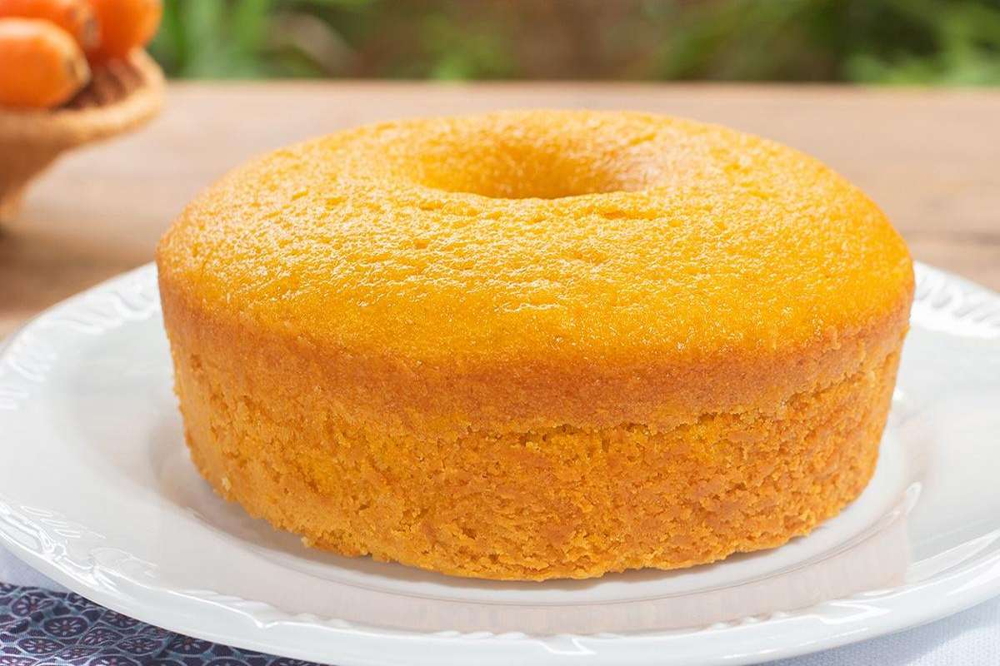

Receita Bolo de Cenoura
Uma receita deliciosa e facil de fazer, veja os ingredientes e passo a passo abaixo
Ingredientes
- 4 cenouras medias
- 2 xícaras de acucar
- 2 xícaras de farinha de trigo
- 4 ovos
- 1/2 xícara de oleo
- 1 colher de sopa de fermento em pó
Modo de Preparo
- Preaqueça o forno a 180
- Bata no liquidificador a cenoura, os ovos, o óleo e o açucar.
- Em uma tigela, misture a farinha de trigo e o fermento.
- Adicione a mistura liquida à mistura seca e mexa até formar uma massa homogênea
- Coloque em uma forma untada e asse por 40 minutos.